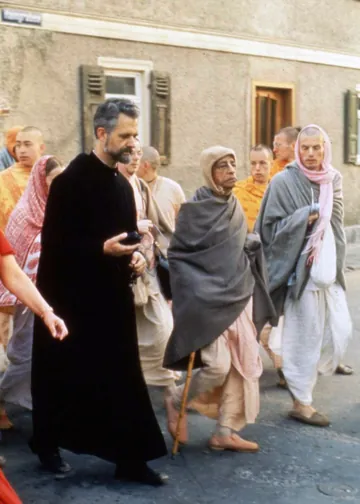
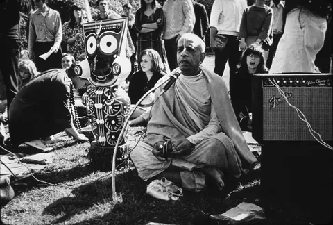
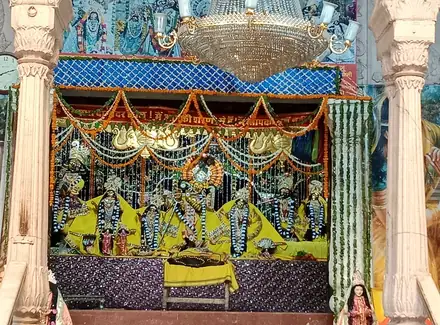

Śrīla Prabhupāda’s Vani Temple
Today
Sample day
Quote
Vaniquotes
Source
Vanisource
Translation and Purport
Books, lectures, conversations and letters.
Images
Vanimedia



Vanimedia
Documents
Remembrance
Disciples Remember Śrīla Prabhupāda
Yaduvendu dāsa
Personal eyewitness recollections, intimate exchanges, and devotional memories with His Divine Grace Śrīla Prabhupāda recounted by Yaduvendu das.
Nectar Drop
Hear him today
Lecture, Hamburg, 5 September 1969
Nectar Drops are short, focused audio excerpts of less than 90 seconds, drawn directly from Śrīla Prabhupāda’s recorded lectures, conversations, and morning walks.
More Nectar Drops on Vanipedia
Germany, 1974. Photograph: Christian Jansen.
Topic
Vanipedia
Practical Methods to Absorb the Mind
The four petals
Come back tomorrow
Photograph credits
- Photograph: Prabhupada singing (Germany 1974).jpg, Christian Jansen, CC BY 3.0 via Wikimedia Commons
- Photograph: Prabhupada on a morning walk with Father Emmanuel Jungclaussen.jpg, Christian Jansen, CC BY 3.0 via Wikimedia Commons
- Photograph: Bhaktivedanta Swami with Jagannath in Golden Gate Park, February 1967.jpg, Mukunda Goswami, CC BY-SA 3.0 via Wikimedia Commons
- Photograph: Radha Damodar temple in Vrindavan.jpg, Kridha20, CC BY-SA 4.0 via Wikimedia Commons
.jpg){kind=link}